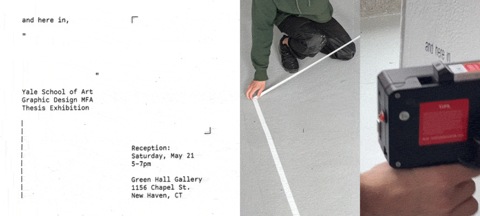

EXHIBITIONS
The School of Art galleries in Green Hall provide a year-round forum for the exhibition of work by students, faculty, and special guests in the four graduate departments of the School and the undergraduate program.
During exhibitions, Green Hall Gallery at 1156 Chapel Street is typically open to the public but due to COVID-19, it will remain open only to the School of Art and Yale communities until further notice.
Graphic Design MFA Thesis Exhibition
May 13 – 23, 2022 in Green Hall Gallery Reception: Saturday, May 21, 5-7PM
and here in sketches a path between remnants of projects and experiences—from materials and tools, to audio recordings of collective and personal spaces, to the contexts in which work is encountered. Artifacts will accumulate in the gallery throughout the duration of the exhibition, distilling activity to form.
From May 13 through May 23, the Graphic Design MFA 2022 Thesis Exhibition will feature work by Alvin Ashiatey, Jessica Flemming, Han Gao, Yuan Gao, Miguel Gaydosh, Rok Hudobivnik, Kathryn-kay Johnson, Mengjie Liu, Ana Lobo, Kang Ma, Churong Mao, Hannah Tjaden, Betty Wang, Mike Tully, and Immanuel Yang.
Due to COVID-19 precautions, the physical exhibition in Green Hall Gallery is viewable only to current members of the Yale community. An accompanying website with photo documentation will be made available online at andhere.in >